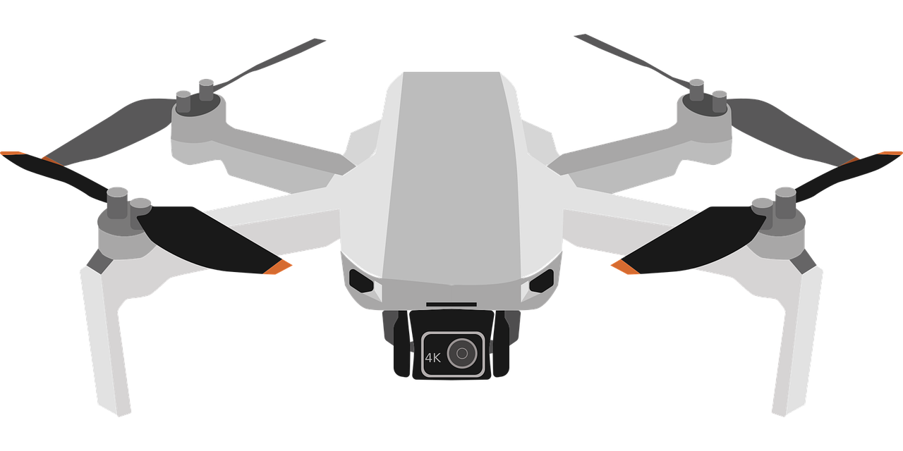

An embedded system is a computer system that combines the uses of a microprocessor and memory (basically a small computer) to perform a specific function within a larger system. Often, because embedded systems are designed for a specific function, they have real time computing restraints, including memory and speed constraints. [1]
Examples of standalone embedded systems:
1.) Digital Cameras
2.) MP3 Players
3.) Calculators
Examples of bigger systems that have integrated embedded systems:
1.) GPS Systems
2.) Automotive Systems
3.) Drones

Each of these larger systems have smaller systems within it that are designed to complete specific tasks. For example, a car may have up to 100 embedded systems within its greater system.